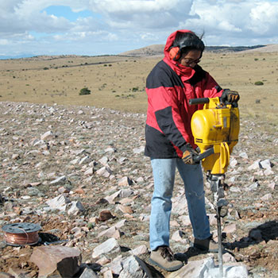

Mousumi Roy
Associate Professor
Ph.D., Geophysics, Massachusetts Institute of Technology, 1997
Mailing address:
MSC07-4220, University of New Mexico
1919 Lomas Blvd,
Albuquerque, NM 87131
(505) 277-4521
mroy at unm.edu
My group currently includes:
- Undergraduate students: B. Spears, V. Enders, P. Peirce, K. Kennard
- Graduate students: Kat Cosburn
Here is a photo of current group members in the brand
new Physics, Astronomy, and Interdisciplinary Science Building at
UNM!

Prospective students: Below you will find a list
of current areas of interest and funded projects. I am always
looking for motivated graduate and undergraduate students who are
interested in physics and math and numerical modeling applied to
geologic problems. Send me an email.
Research Interests:
- Applications of physics and math to geologic problems!
- Area 1: What can we learn about plate tectonics from patterns of Cenozoic volcanic and magmatic activity in the western US?


So far, this project has been contributed to by three undergraduate students working with me on senior honors theses.

- Area 2: What can we learn about lithospheric evolution, structure, and rheology from modeling deformation patterns observed at the earth's surface, for example, from geologic and geodetic studies?

- Area 3: Combining multiple datasets, e.g. the flux of cosmic ray muons, gravity, seismic data, in joint-inversions for Earth structure


- Area 4: Most recently, I have been interested in volcanoes--specifically, how magma deforms, flows, mixes within and beneath volcanic systems.
Current Grants (and funding source):
- 3D Mapping of Shallow Targets Using Microgravity and Cosmic Ray Muons (Los Alamos National Laboratory)
- What Lies Beneath the Dunes? Geophysical Modeling of Subsurface
Structure Beneath White Sands National Monument (UNM - Women in
STEM - NSF Advance)
- Applications of nonlinear dynamics to magma mixing (2017 summer fellowship, Aspen Center for Physics)
Past Grants:
- Collaborative Research: Evaluating the roles of melt migration and mantle flow in lithospheric evolution: the Colorado Plateau as a geodynamic laboratory for EarthScope (NSF Earthscope)
- Collaborative Research: Interpretations of seismic anisotropy in terms of the long-term tectonic history of the Western US ( NSF-Earthscope)
- GPS in the Rio Grande Rift: Collaborative Research: Crustal deformation measurements and a multidisciplinary geophysical investigation of the Rio Grande Rift (NSF-EarthScope)
- Collaborative Research: Integrated study of exhumation and erosion using low-temperature thermochronology and geodynamic models of the Colorado Plateau (NSF Tectonics)
- Testing a new model of the Tertiary evolution of the Colorado Plateau based on constraints from magmatic patterns, xenoliths, geologic, and geophysical data (NSF Tectonics)
- Development of a UNIX/LINUX geodynamic modeling facility within the department's UNIX network. (NSF - IF)
- Post-Laramide evolution of the Southern Rocky Mountains (NSF-CDROM)
- Viscoelastic modeling of plate boundary deformation, particularly the long-term geologic evolution of strike-slip plate margins, such as the San Andreas fault system in California. (UNM RAC grant)
- Using gravity, seismic, and topographic data to constrain crust and mantle structure in the Transverse Ranges, southern California (Southern California Earthquake Center).
Previous group members:
- Postdocs: Dr. Joya Tetreault (now at NGU in Norway)
- Graduate students: Megan Lewis (PandA), Nicolas George (UNM EPS) M. Dichter (MS; now at Applied Technology Associates), Jon MacCarthy (MS; now at LANL); K. Sanders, C. Callahan
- Undergrad senior theses:A. Johnson, S. Gold, R. Osuna Orozco, C. Peterson, N. Natek, D. Hayes
- Other: R. Dunagin, Mark Fleharty (UNM Computer Science) - Linux system administration and scientific programming
Selected Recent Publications:
- Cosburn, Katherine, Mousumi Roy, Elena Guardincerri and Charlotte
Rowe, Joint inversion of gravity with cosmic ray muon data at a
well-characterized site for shallow subsurface density prediction, Geophys. J. Int. (2019) 217, 1988-2002
- Roy, M., Lewis, M., Johnson, A., George, N, C. Rowe and E. Guardincerri, Inferring shallow subsurface density structure from surface and underground gravity measurements: calibrating models in a well-studied geologic setting, Pure Appl. Geophys. 2017, https://doi.org/10.1007/s00024-017-1742-4 .
- Guardincerri, E., C. Rowe, E. Schultz Fellenz, M. Roy, N. George, C. Morris, J. Bacon, M. Durham, D. Morley, K. Plaud-Ramos, D. Poulson, D. Baker, A. Bonneville, and R. Kouzes (2017), 3D Cosmic Ray Muon Tomography from an Underground Tunnel, Pure Appl. Geophys., vol. 174, no 5, pp 2133-2141, doi:10.1007/s00024-017-1526-x
- Roy, M., Gold, S., Johnson, A., Osuna Orozco, R., Holtzman, B. K. and Gaherty
J. (2016), Macroscopic coupling of deformation and melt migration at continental
interiors, with applications to the Colorado Plateau, J. Geophys. Res. Solid Earth,
121, doi:10.1002/2015JB012149.
- Roy, M., Osuna Orozco, R., Holtzman, B. and Gaherty, J., Melt-enhanced
Rejuvenation of Lithospheric Mantle: Insights from the Colorado Plateau,
arXiv:1212.2984 [physics.geo-ph], 2013.
- Berglund, H. T., A. F. Sheehan, M. H. Murray, M. Roy, A. R. Lowry, R. S. Nerem,
and F. Blume, Distributed deformation across the Rio Grande Rift, Great Plains,
and Colorado Plateau, Geology, 40(1), p. 23-26, doi:10.1130/G32418.1, 2012.
- Roy, M., T.H. Jordan, and J. Pederson, Cenozoic magmatism and rock uplift of the Colorado Plateau by warming of chemically buoyant lithosphere, Nature 459, doi:10.1038/nature08052, 2009
- Pazzaglia, F., Selverstone, J., Roy, M., and 4 others, Geomorphic expression of midcrustal extension in convergent orogens, Tectonics, 26, doi: 10.1029/2006TC001961, 2007 ()
- Roy, M., MacCarthy, J.K., and J. Selverstone, Upper mantle structure beneath the eastern Colorado Plateau and Rio Grande rift revealed by Bouguer gravity, seismic velocities, and xenolith data, Geochemistry Geophysics Geosystems, v. 6, 2005.
- McCoy, A., Roy, M., L. Trevino and R. Keller, Gravity models of the Colorado Mineral Belt, in The Rocky Mountain Region - An Evolving Lithosphere: Tectonics, Geochemistry, and Geophysics: American Geophysical Union Geophysical Monograph 154 (eds. Karlstrom, K.E. and Keller, G.R.), 2005,
- Peterson, C. and M. Roy, A comparative study of the basins of the Rio Grande Rift based on gravity and flexure models, New Mexico Geological Society Guidebook, 56th Field Conference, 2005.
Classes taught:
- PHYS 1310, 1320, 2310: Calculus-based General Physics I, II,
III
- PHYS 2415: Computational Physics
- PHYS 327 / EPS 427/527: Introduction to Geophysics
- PHYS 480 / 581: Earth Deformation
- PHYC 105: Physics and Society
- EPS 533: Introduction to Statistics and Data Analysis
- EPS 523 - Evolution and Dynamics of Continental
- EPS 523 - Rheology of Continental Crust
- EPS 522 - Geodynamics
- EPS 548 - Strength and Dynamics of Lithosphere
- EPS 427/527 & PY 327 Introduction to Solid Earth Geophysics
- EPS 101 - Introduction to Physical Geology
- ENVSCI 101-The Blue Planet
- EPS 110 - Earthquakes